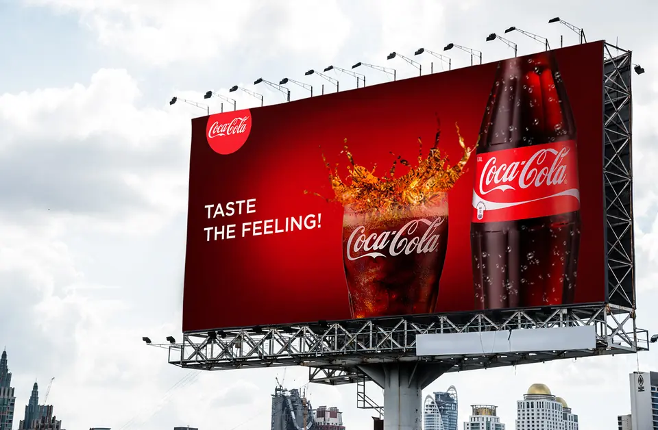

Learning Target
I can complete the Communication Styles assessment and deliver my polished billboard because professional communication requires clear files, accurate messages and responsible client follow-through.
Priority TEKS: §127.160(d)(2)(H) — Exhibit public relations skills to support customer and client satisfaction.
Supporting: §127.160(d)(16)(D), (9)(E), (20)(A)
Warm-Up
A designer has just delivered a concert poster as a flat image. The client asks to correct the start time before opening night. Luckily, the designer kept a separate editable project file. A good final delivery includes what the client needs for a correction, not just an attractive picture.
Write your own brief answer, then copy and submit it in the existing school Form.
Group Learn — Brand Feeling and a Reliable Handoff
Yesterday we analyzed advertisements that catch attention or give a direction. Today we analyze a new purpose: making an audience associate a product with a feeling, and then delivering the work so a client can actually use it.

Notice the visual argument: The bottle and drink make the product unambiguous; red reinforces brand recognition; the slogan associates the product with enjoyment. Unlike the directional advertisement from yesterday, this message is about feeling, not finding a street. A positive slogan is not automatically bandwagon persuasion. Bandwagon needs an actual suggestion that other people are joining or doing something.
Now think like the client: A designer should keep an editable PSD, supply the exact formats requested in the iCEV/Classroom task, check that the files open and include the message’s information source, intended audience/receiver and communication purpose. Saving a screenshot alone cannot replace a requested editable project.
Professional feedback: Restate the concern, propose a specific change, and explain what would show the revision works. Treat a client's question as information about the project, not a judgment about the designer.
Group Practice — The Missing Editable File
An arts nonprofit receives a beautiful finished billboard PNG, but the dates of its festival have changed. The client needs a revision. The designer still has the original layered Photopea PSD, but forgot to attach it.
- Identify the difference between an exported PNG and an editable PSD, and why it matters here.
- Write a short, respectful client response describing the file and revision you will provide.
- Decide how you can verify that the corrected image and editable source both open correctly before delivery.
Mastery Question 1
A colleague reviews a community theater billboard: its show title is readable, but nobody can find the ticket link. Respond constructively, identify one precise call-to-action revision, and explain how you would test whether the change helps a first-time viewer.
Build Your Answer
Use the small response pieces to build one complete explanation. Your choices and reasoning become your own answer.
Optional starts: “I notice…” / “My reasoning is…” / “This helps because…”
Optional starts: “I notice…” / “My reasoning is…” / “This helps because…”
Optional starts: “I notice…” / “My reasoning is…” / “This helps because…”
Extra Help
Read the whole registered question before answering. Use the visible design examples and identify exactly what you see, how it affects the audience, and why your recommendation makes sense.
Read your paragraph. To improve it, change the notebook-paper answers above, then select Create My Response again.
When your response looks right, this button copies it and opens the Submission Form. There, paste and submit.
Perform
Finish your assigned iCEV assessment, make final improvements, and turn in the billboard and its communication components.
- Complete the assigned iCEV Communication Styles Final Assessment according to your course instructions and teacher's timing.
- Open your latest PSD in Photopea. Verify product choice, bandwagon persuasion, information source, message and audience/receiver.
- Check the iCEV rubric: Research & Organization 35; Concept & Understanding 35; Creativity/Craftsmanship 15; Production/Effort 15.
- Make necessary finishing edits. Save the editable PSD; export a PNG or PDF only if the assigned Google Classroom task asks for it. Open each final file to check it.
- Submit the billboard and the three written communication components through the assigned Google Classroom task. Check that your attachment and submission are complete.
Readable headline → product → call to action
iCEV rubric: Research & Organization 35; Concept & Understanding 35; Creativity/Craftsmanship 15; Production/Effort 15. Your original PSD must remain editable and your message must be appropriate for its audience.
Show and Tell — Two Stars and a Wish
The teacher may choose about three presenters using the random wheel. Have your finished billboard ready to display. Listeners identify two specific strengths and one constructive improvement. Presentation does not replace your iCEV final assessment or Google Classroom submission.
Independent Mini Learn
A message can be readable and still give the wrong impression. Think about the client’s intended audience and purpose before choosing which details to change.
Do not recycle the theater-ticket solution. This new museum scenario asks how an overall impression changes, not how to locate a link.
Say which single visual detail you would change first, and why.
Mastery Question 2
A family science museum says its finished billboard makes the museum look like a store instead of an interactive place for children. Write a respectful client response, propose two specific visual/message revisions, and describe how you would check whether families understand the intended invitation.
Build Your Answer
Each piece helps you create one independent, complete response to the original question.
Optional starts: “I notice…” / “My reasoning is…” / “This helps because…”
Optional starts: “I notice…” / “My reasoning is…” / “This helps because…”
Optional starts: “I notice…” / “My reasoning is…” / “This helps because…”
Extra Help
Think about an actual audience, specific observable design decisions and what evidence would show improvement. Use optional sentence starters or your own wording.
Read your paragraph. To improve it, change the notebook-paper answers above, then select Create My Response again.
When your response looks right, this button copies it and opens the Submission Form. There, paste and submit.
TEKS Temperature Check
Today's target: See the Learning Target above.
Priority TEKS
See Priority TEKS above.
Extra Help — sentence starters
Something that helped me was… One thing I would improve is…
Completion Checklist
Check each item you've finished to unlock Creative Studio.
Creative Studio unlock after all four checks.Creative Studio
Use the remaining class time to explore and extend today’s learning. This is required, assessed creative work. Try an idea below, combine ideas, or make your own creative improvement to the current project using today’s content and already taught, approved tools.
Your own idea means a creative extension of today's work—not permission to switch to an unrelated activity or tool.
These are starting points—not three assignments to finish.
Professional Handoff
Describe one improvement that makes the finished billboard easier to understand.
Audience Test
Ask a viewer to identify your message and next action. Use their response to evaluate one choice.
Rubric Explorer
Choose one iCEV rubric category and explain how a specific decision demonstrates it.
RTF Comic Strip
RTF Bloopers & Office Shenanigans
Approved behind-the-scenes skits rotate from the skit pool: website bugs, build mishaps, character banter and office antics, not lesson content.
My creative work
Describe work from any suggested idea or your own extension of today’s project. A meaningful attempt or discovery counts; you do not need three finished activities.